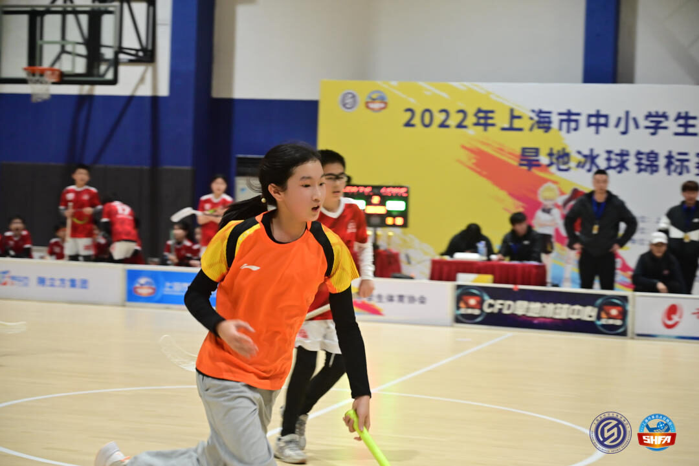

Project 01 of 06
Floorball · Pinghe Dragons · 2017 to 2026
Ten years on the floor
This is the shortest page here, because most of what it describes is not written down anywhere. It is the part that produced the questions the other pages try to answer.

A shot is decided in about a third of a second, and the decision is not a calculation. You are reading the goalkeeper's weight, the defender's angle, whether the view to the net is blocked, all at once, and committing before any of it finishes happening. Speed, angle, distance, screening, reaction window. Those five words are the whole of it.
They are also intuitions, and an intuition is not evidence. The NHL page is what happened when I tried to check them against a dataset.
What the quantitative work is not about
The questions on this page are floorball questions. The data used to answer them is not floorball data, because no comparable public floorball shot dataset exists. The modelling uses public NHL tables instead, and that substitution gets declared rather than glossed over.
- Puck and ball geometry differ, as do the playing surface, the rules and the goal dimensions.
- Shooting mechanics and measurement systems differ.
- So nothing estimated on NHL data is reported as a floorball effect. The NHL work evaluates patterns inside the NHL data and stops there.
- The single available floorball video is qualitative context. It is not evidence and is not used as any.
Writing that boundary down cost a result that would have been more interesting to claim. A transfer claim nobody checked is worth less than a narrower claim that holds.